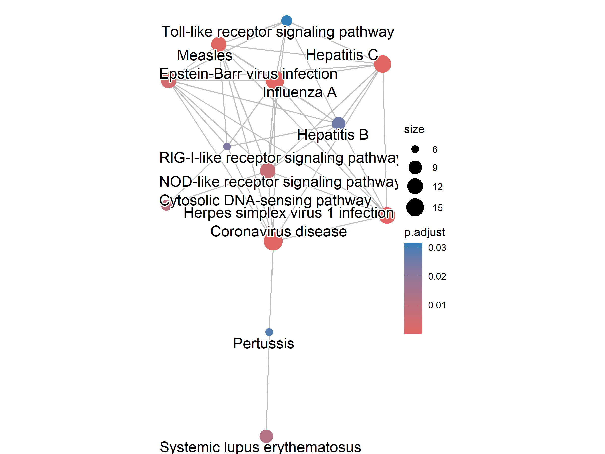

Functional Enrichment Results
GO Biological Process — Top Enriched Terms
| GO ID | Term | Gene Ratio | Fold Enrichment | Adjusted p-value |
|---|---|---|---|---|
| GO:0051607 | Defense response to virus | 48/271 | 10.00 | 1.66 × 10⁻³⁰ |
| GO:0009615 | Response to virus | 52/271 | 8.13 | 4.37 × 10⁻²⁹ |
| GO:0045071 | Negative regulation of viral genome replication | 18/271 | 25.05 | 5.08 × 10⁻¹⁸ |
| GO:0050792 | Regulation of viral process | 24/271 | 11.85 | 2.45 × 10⁻¹⁶ |
| GO:0140374 | Antiviral innate immune response | 17/271 | 14.98 | 3.78 × 10⁻¹³ |
| GO:0009617 | Response to virus | 52/271 | 8.13 | 4.37 × 10⁻²⁹ |
| GO:0045069 | Regulation of viral genome replication | 18/271 | 15.66 | 2.92 × 10⁻¹⁴ |
| GO:0016032 | Viral process | 33/271 | 5.80 | 1.25 × 10⁻¹³ |
GO Molecular Function — Top Enriched Terms
| GO ID | Term | Fold Enrichment | Adjusted p-value |
|---|---|---|---|
| GO:0003725 | Double-stranded RNA binding | 9.49 | 1.06 × 10⁻⁵ |
| GO:0016779 | Nucleotidyltransferase activity | 4.97 | 3.70 × 10⁻³ |
| GO:0003727 | Single-stranded RNA binding | 5.90 | 1.10 × 10⁻² |
| GO:0016763 | Pentosyltransferase activity | 8.13 | 1.10 × 10⁻² |
| GO:0008186 | ATP-dependent activity, acting on RNA | 5.88 | 1.21 × 10⁻² |
KEGG Pathways — Top Enriched
| Pathway | Description | Fold Enrichment | Adjusted p-value |
|---|---|---|---|
| hsa05164 | Coronavirus disease (COVID-19) | 4.38 | 3.03 × 10⁻⁷ |
| hsa05160 | Influenza A | 6.05 | 2.47 × 10⁻⁹ |
| hsa04621 | NOD-like receptor signaling pathway | 3.62 | 2.27 × 10⁻⁶ |
| hsa04623 | Cytosolic DNA-sensing pathway | 5.19 | 1.01 × 10⁻³ |
| hsa04622 | RIG-I-like receptor signaling pathway | 5.13 | 1.08 × 10⁻² |
| hsa04620 | Toll-like receptor signaling pathway | 3.95 | 3.15 × 10⁻² |
| hsa05168 | Herpes simplex virus 1 infection | 4.45 | 6.84 × 10⁻⁶ |
| hsa05162 | Measles | 4.98 | 1.23 × 10⁻⁵ |
Biological Interpretation
The enrichment analysis consistently highlights antiviral innate immune responses dominated by interferon-mediated signaling pathways. The results indicate that unvaccinated individuals mounting an Omicron infection activate a robust type I interferon response, with strong upregulation of ISGs including IFI27, IFI44L, SIGLEC1, OAS1/2/3, ISG15, MX1, and MX2. This is consistent with the known biology of SARS-CoV-2 infection and the role of the interferon pathway in early antiviral defense.
Note: These results represent observations from transcriptomic analysis. Docking and enrichment analyses identify associations, not causal relationships. The findings should be considered in the context of the study limitations documented in the full report.
Visualizations


